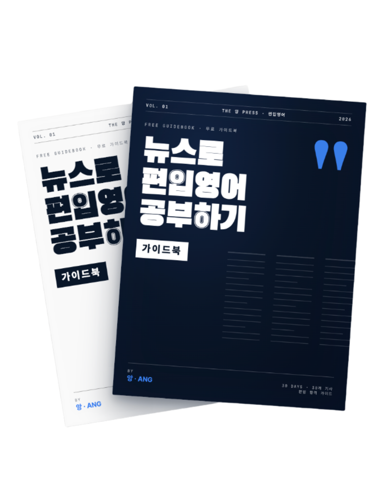

읽어야 할 잡지
이코노미스트, 뉴욕타임즈 등 편입 영어와 결이 맞는 매체를 정리합니다.
FREE GUIDEBOOK · VOL. 01
실제 편입 영어와 결이 맞는 영어 잡지·섹션 로드맵을 정리했습니다. 어떤 잡지를, 어떤 섹션을, 어떤 순서로 읽어야 하는지 먼저 잡고 가세요.
입력 후 바로 다운로드 페이지로 이동합니다. 추가 자료 업데이트를 받으려면 실제 사용하는 이메일을 추천합니다.

WHAT'S INSIDE
이코노미스트, 뉴욕타임즈 등 편입 영어와 결이 맞는 매체를 정리합니다.
재미있어 보여도 편입 영어에는 효율 낮은 섹션을 피하고, 우선순위를 잡습니다.
처음부터 어려운 글에 박지 않고, 실력이 쌓이는 순서대로 인풋합니다.
단어, 표현, 문장 구조, 배경지식을 어떻게 가져가야 하는지 설명합니다.
WHY THIS EXISTS
편입 영어는 결국 긴 영어 텍스트를 빠르고 정확하게 처리하는 시험입니다. 이 가이드북은 “무작정 기사 읽기”가 아니라, 편입 영어에 맞는 방향으로 읽는 법을 잡기 위한 시작점입니다.
“서강대 시험에서 내가 읽었던 기사가 토씨 하나 안 바뀌고 그대로 나왔다.”
— 라저형CREATOR
수능 영어 3~4등급 수준에서 학원·인강 없이 영어 기사 기반 독학으로 편입을 준비했습니다. 이 문서는 그 방식의 첫 번째 로드맵입니다.
GET THE GUIDE
이메일 입력 후 바로 다운로드 페이지로 이동합니다.